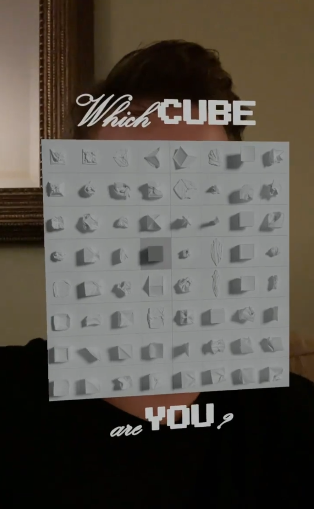
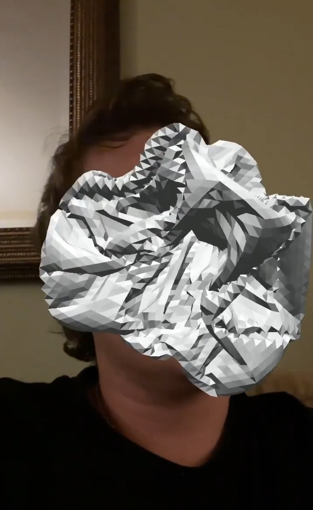
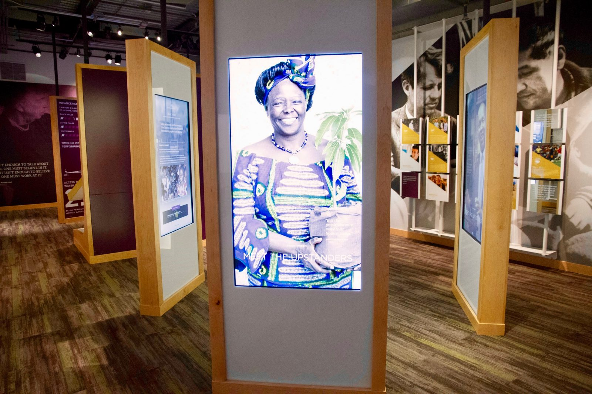
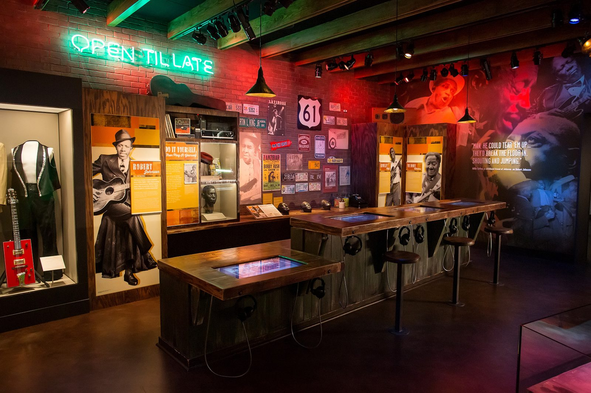

Creative Technology
Resume
In addition to my 8 years of experience creating videogame art installations using Unity and Processing, like my recent MFA thesis show CLOTH^3, I also have experience working as a Creative Technologist: building applications for the browser and experimenting with virtual and augmented reality technologies.
Here are some Instagram filters I made in Spark AR, connected to my MFA thesis piece "A few ways of being a cube".


At Gallagher & Associates I worked with UX/UI, exhibit, and content designers to build touch screen interactives for the Illinois Holocaust Museum in Skokie, Illinois and Mississippi Arts + Entertainment Experience in Meridian, Mississippi. These were built using HTML5/SASS, React.js, and pixi.js.
 

Also while at G&A I collaborated with designers to imagine possibilities for deploying emerging technology in museum settings, primarily prototyping on the Hololens AR headset and the (sadly already defunct) Google Tango AR tablet. Some of these experiments included feeding a dinosaur, an interactive tour of our office, a hypothetical museum object overlay interface, and artistic experiments with a sculptor.
In my time working at Indiana University in the Hamilton Luger School of Global and International Studies I had the opportunity to create smaller games and prototypes focused on outreach for some of the language programs.